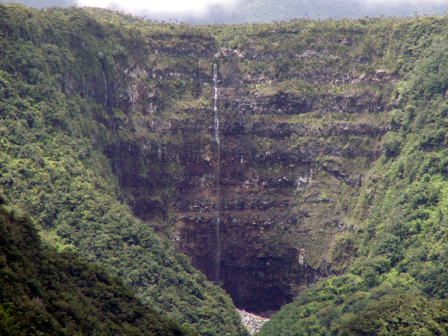
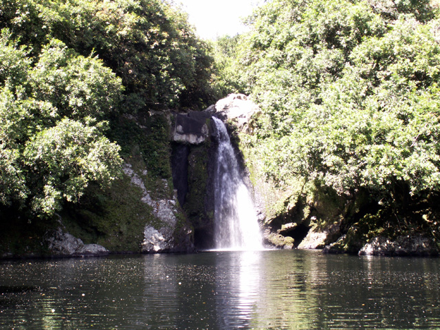
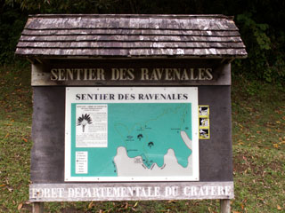
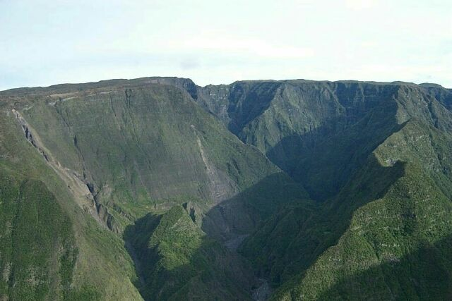
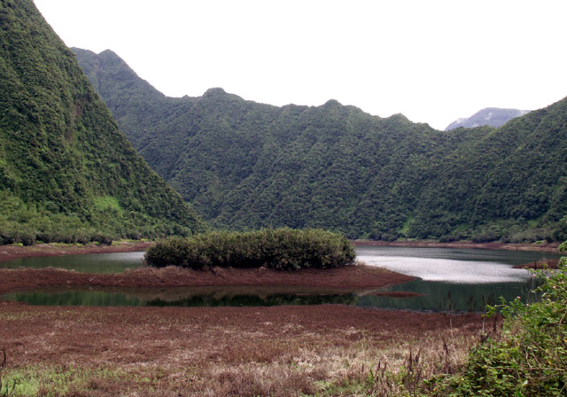
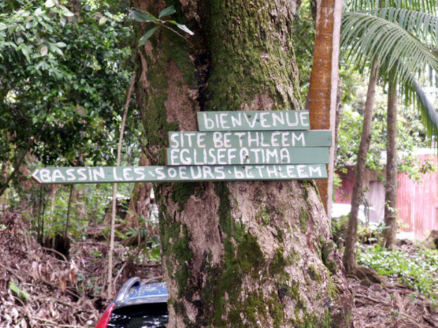
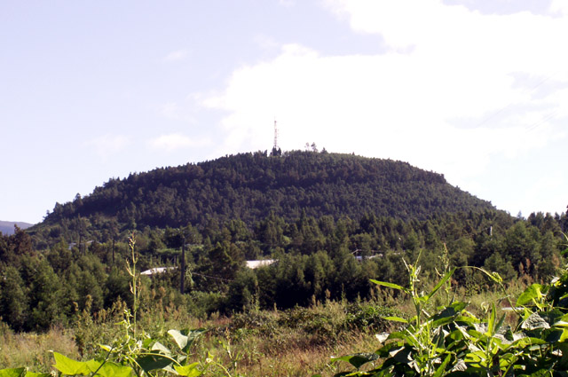
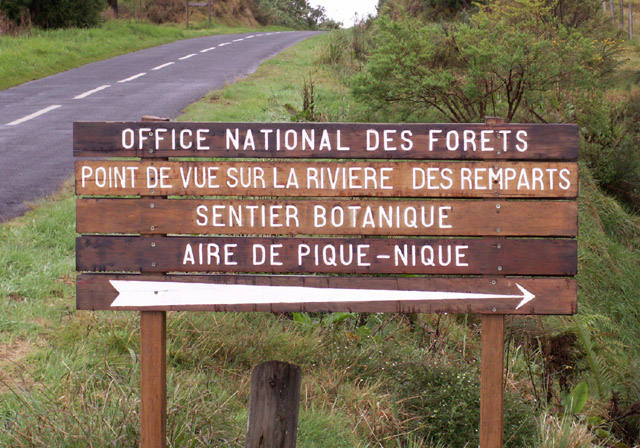
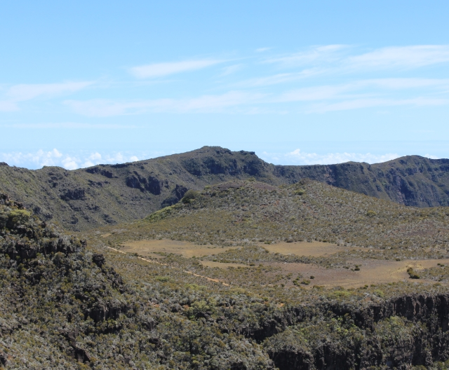

.svg)
-
Randonnée Barrage de Takamaka
Randonnée Barrage de Takamaka. Attention ce parcours de rando est souvent fermé, surtout lors de la saison des pluies, de Décembre à Avril, si vous observez un ciel sombre et chargé ne vous risquez surtout pas à descendre dans le lit de cette rivière. Cette région de l’île est une zone où la montée des eaux est des plus importantes et des plus soudaines. Le sentier débute à l'extrémité de la plate-forme et suit le flanc du rempart. Après quelques centaines de mètres, descendez à gauche en direction de Takamaka 1 et de bébour.
-
Randonnée Bassin Boeuf
Randonnée Bassin Boeuf, cette randonnée sans grande difficulté est l'occasion d'une balade familiale, d'une journée de tranquillité, l'occasion d'un pique-nique dans un lieu magique. Vous pouvez également en profiter et prendre du plaisir à traverser à la nage le bassin Bœuf dans une eau limpide à 18 degrés. Soyez tout de même prudent. Le sentier débute par une légère descente, à votre gauche déjà le bruit d'une cascade, vous l'apercevez entre les branches d'un Jamrosat dont le fruit comestible a la consistance d'une pomme croquante et le parfum de la rose.
-
Randonnée Circuit des Ravenales
Circuit des Ravenales ou sentier des ravenales, situation Saint-Benoît La Réunion. La commune de Saint-Benoît dévoile au grés du sentier des Ravenales les trésors de ses paysages entre flore tropicale, vergers, champs de canne et océan. Le Ravenale, nom scientifique : Ravenala madagascariensis de la Famille : Musacées, origine : Madagascar, est plus connu sous le nom d'arbre du voyageur, appelé ainsi en raison de la quantité, relativement importante, d'eau de pluie retenue dans ses longues feuilles que le voyageur, dit-on, peut facilement recueillir.
-
Randonnée Grand Bassin
La descente vers Grand Bassin se fait à partir du chemin de terre qui se trouve à gauche un peu avant le point de vue final de Bois Court. Suivez le sentier balisé par des marques blanches peintes sur la roche. Le sentier part à droite après quelques maisons. On arrive à l'îlet au bout d'une heure de descente dans un sous bois, mais avec une vue presque permanente sur la vallée, l'îlet et la cascade. L'îlet de Grand Bassin connut la prospérité avec la culture du café et du géranium. Il y eut jusqu'à 250 familles, un adjoint spécial, une chapelle.
-
Randonnée Grand-Étang
Le plus important plan d'eau intérieur de La Réunion, il est situé sur le territoire communal de Saint-Benoît. Niché au fond d’une sorte de mini-cirque, le site de Grand-Etang est original entièrement recouvert par les eaux de ruissellement à la période pluvieuse, totalement à sec le reste du temps. le Grand Étang est à 500 mètres d’altitude. Il est constitué d’un vaste plan d’eau d’environ 7 km de périphérie. Il est encerclé par le massif du cratère, les mornes de l’Étang et reçoit l’eau venant du bras d’Annette et de la ravine de l’Étang.
-
Randonnée Îlet Bethléem
Une promenade facile 30 minutes aller retour, vous permettra de découvrir l'îlet Bethléem. La route se termine sur un petit parking, prendre le sentier bétonné qui descend à l'îlet Bethléem. Ce chemin serpente entre les fougères et les magnifiques bambous, la descente est ponctuée par des petites stations (croix, chapelle). Il surplombe la rivière des Marsouins vous offrant la vue sur la rivière et les bassins. Vous arrivez sur le site de l'îlet Bethléem, un lieu chargé d'histoire, un site magnifique qui donne une image de La Réunion d'autrefois.
-
Randonnée Piton Hyacinthe
Randonnée Piton Hyacinthe. Le Piton Hyacinthe tient son nom du Père Hyacinthe qui le visita en 1690, ainsi que le petit village qui est à ses pieds. Ce piton domine la commune du Tampon, il culmine à 1 372 m. Il est visible de loin car il est équipé d’une antenne relais. Cette randonnée est une balade classée sentier marmailles par la région, elle ne présente donc aucune difficulté. Aucune difficulté sur cette petite route forestière, au sommet l'antenne relais et un petit kiosque pour un moment de repos avant de redescendre.
-
Randonnée sentier botanique de Notre Dame de La Paix
Sentier botanique et belvédère. Sentier Marmailles. Difficulté : Facile. Sentier Marmailles sentier botanique. Durée : 1 heure. La forêt de Notre Dame de La Paix d'une surface de 192.80 ha est située entre 1 450 et 1 730 mètres d'altitude sur le flanc ouest du Piton de La Fournaise en bordure de la vallée de la Rivière des Remparts.Elle constitue un témoin de la formation végétale originelle typique des moyennes altitudes humides de l'île de La Réunion communément appelée "de couleur des hauts ".
-
Randonnée Sentier Mouton
Le sentier Mouton remonte le long du rempart, la pente est douce, et c'est sans grande difficulté que vous rejoignez la pointe de la crête. Au Sud la plaine des Remparts et le piton Lacroix, au Nord, le gigantesque effondrement de Grand Bassin, puis au dernier plan, le Grand Bénare, au Sud-est l'extrémité de la plaine des Sables. En quelques minutes vous atteignez l'Oratoire Sainte-Thérèse, lieu de recueillement reconstruit en 1964. Vous avez alors devant vous le fond de la rivière de l'Est et, sur l'autre versant, le gîte du volcan.
Les randonnées de la Réunion
Paradis de la randonnée, La Réunion vous offre
plus de 1 000 km de sentiers très bien balisés.
Partir à la rencontre des Réunionnais qui vivent
dans ces mondes à part que sont les cirques,
les îlets, découvrir la diversité de la flore tropicale,
se balader sur les hauteurs de l'île pour admirer
des paysages grandioses, se baigner dans les cascades dévalant des montagnes.
Le menu des itinéraires
est si varié que chacun y trouvera son bonheur,
du promeneur du dimanche au coureur de sommets.